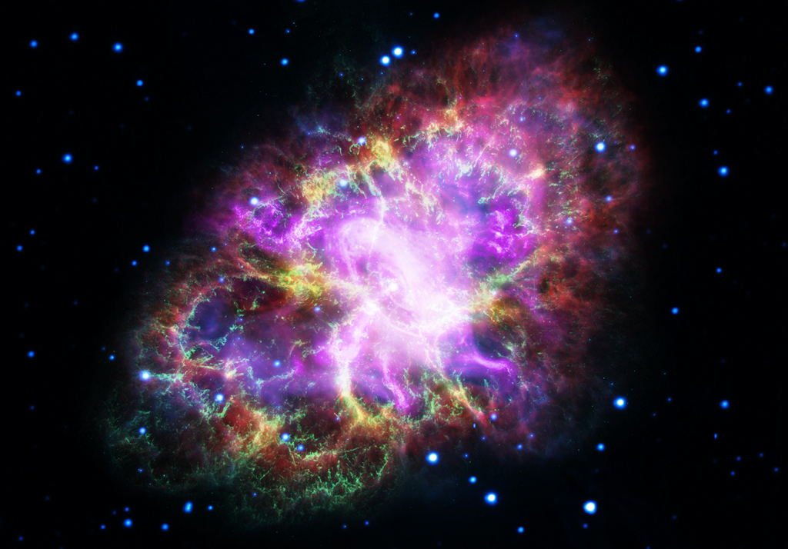
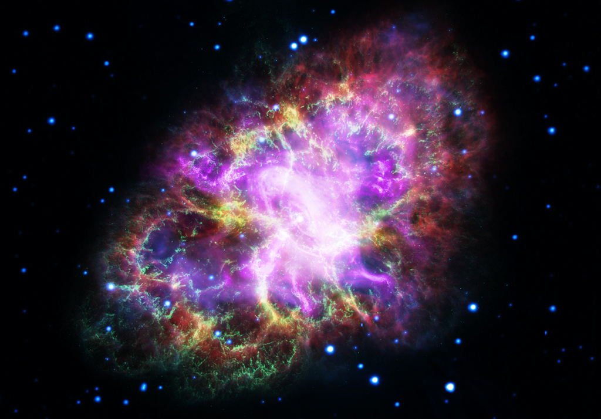
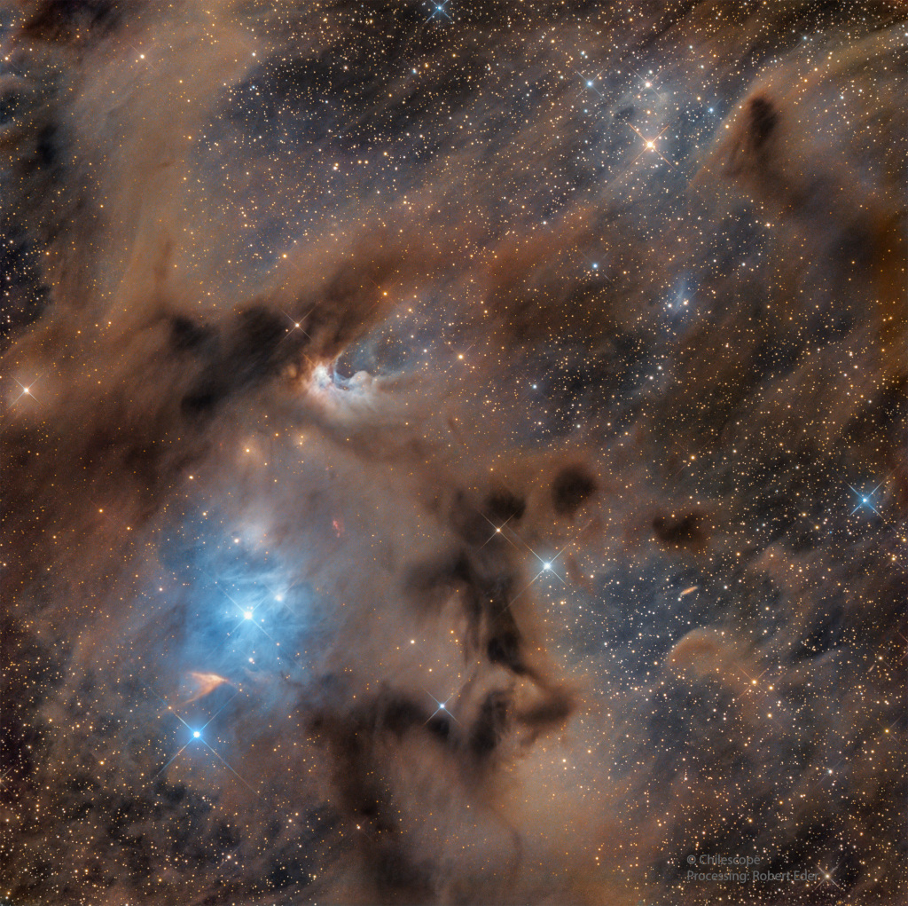
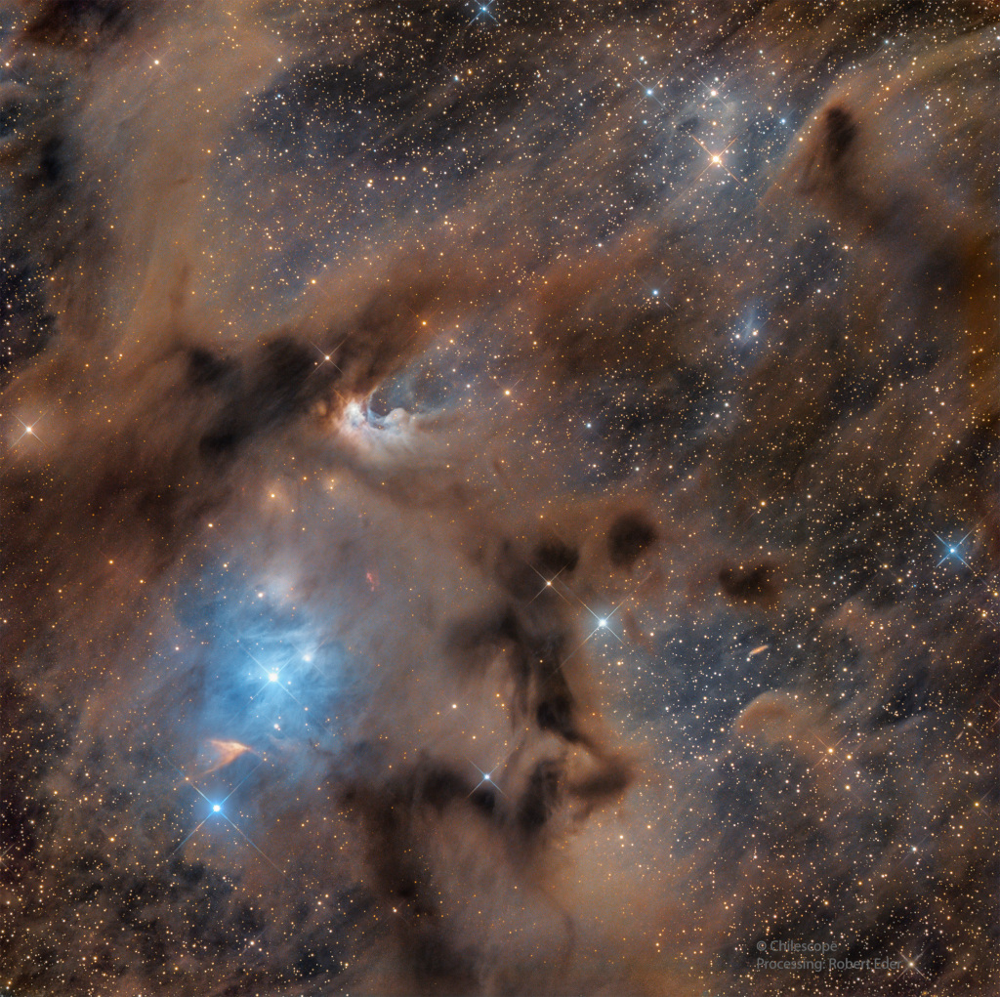
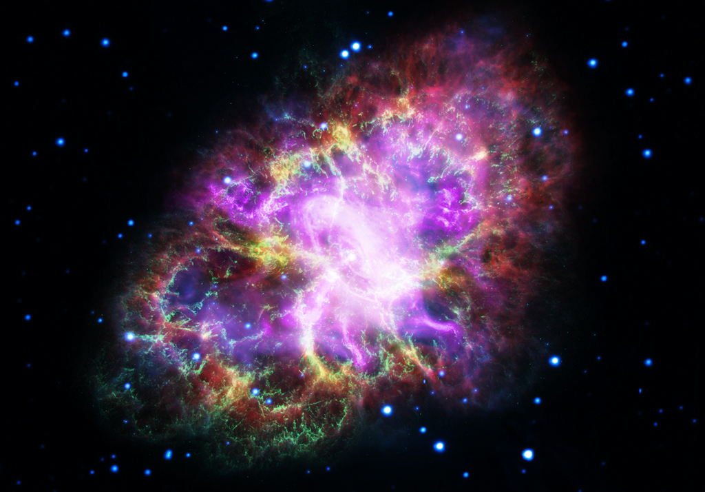
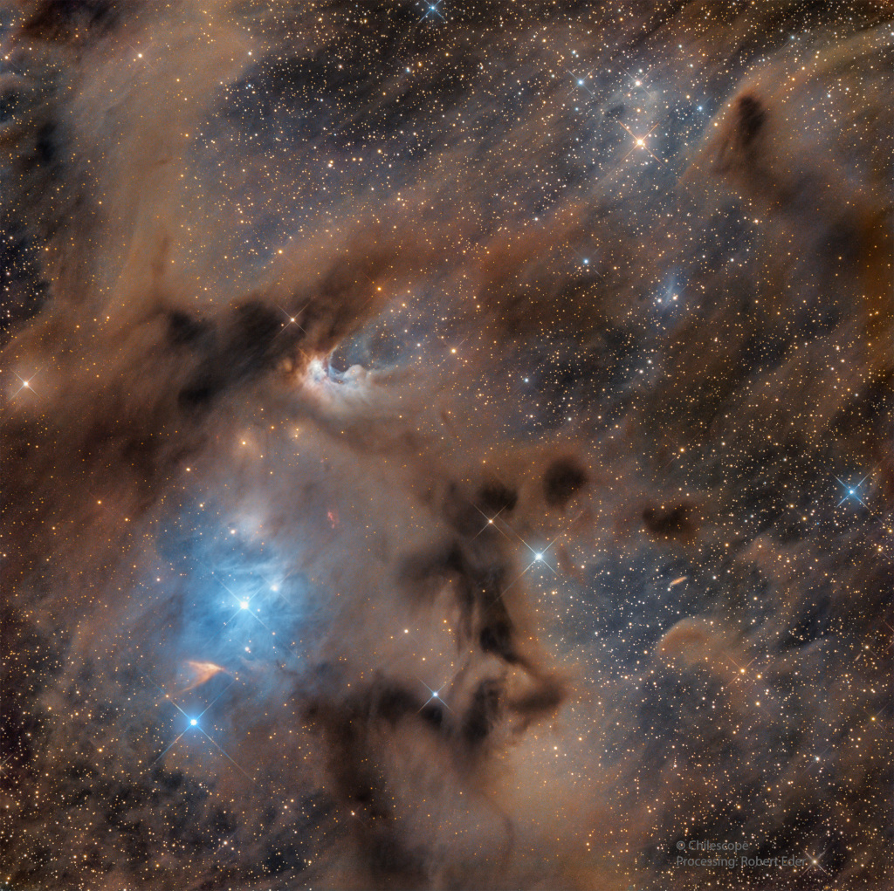

 

Massive stars can blow bubbles. The featured image shows perhaps the most famous of all star-bubbles, NGC 7635, also known simply as The Bubble Nebula. Although it looks delicate, the 7-light-year diameter bubble offers evidence of violent processes at work. Above and left of the Bubble's center is a hot, O-type star, several hundred thousand times more luminous and some 45-times more massive than the Sun. A fierce stellar wind and intense radiation from that star has blasted out the structure of glowing gas against denser material in a surrounding molecular cloud.
Peculiar spiral galaxy Arp 78 is found within the boundaries of the head strong constellation Aries. Some 100 million light-years beyond the stars and nebulae of our Milky Way galaxy, the island universe is over 100,000 light-years across. Also known as NGC 772, it sports a prominent, outer spiral arm in this detailed cosmic portrait from the large Gemini North telescope near the summit of Maunakea, Hawaii, planet Earth. Tracking along sweeping dust lanes and lined with young blue star clusters, Arp 78's spiral arm is likely pumped-up by galactic-scale gravitational tidal interactions

